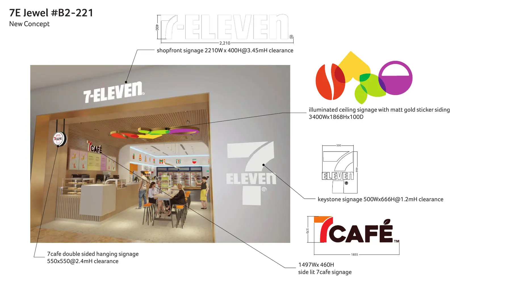
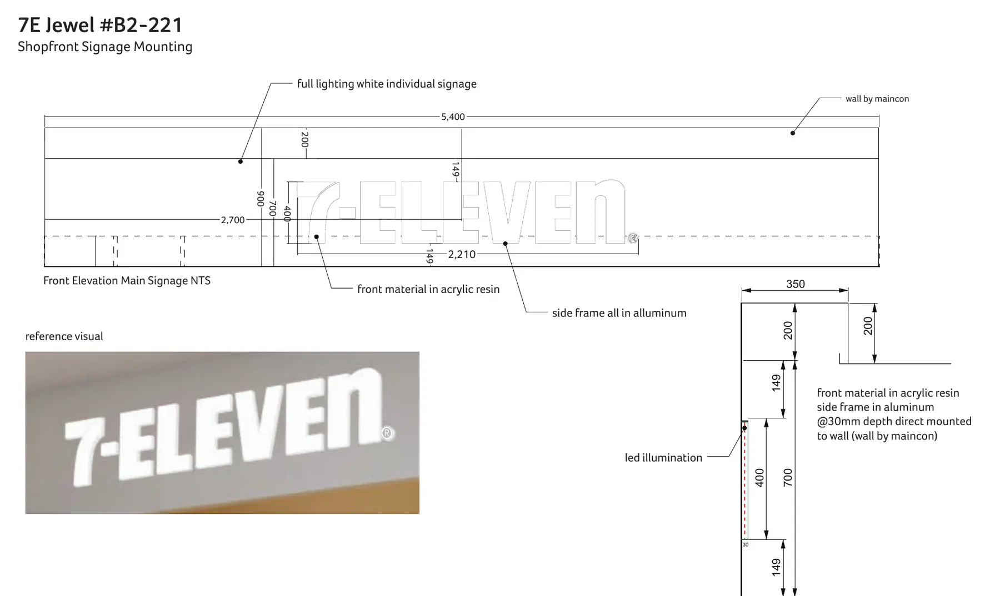
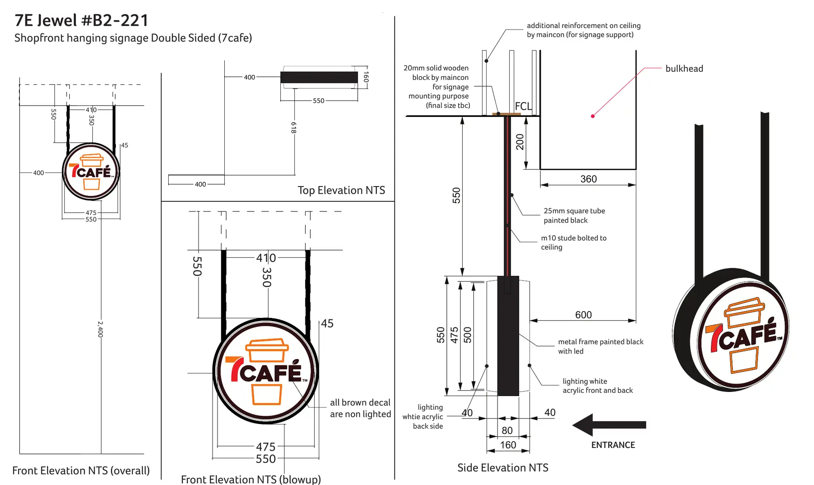
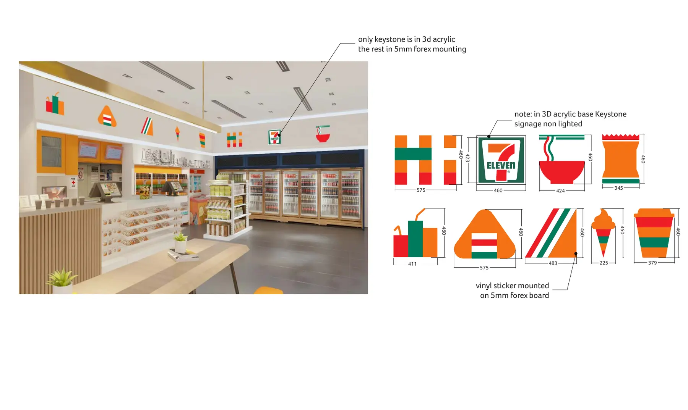
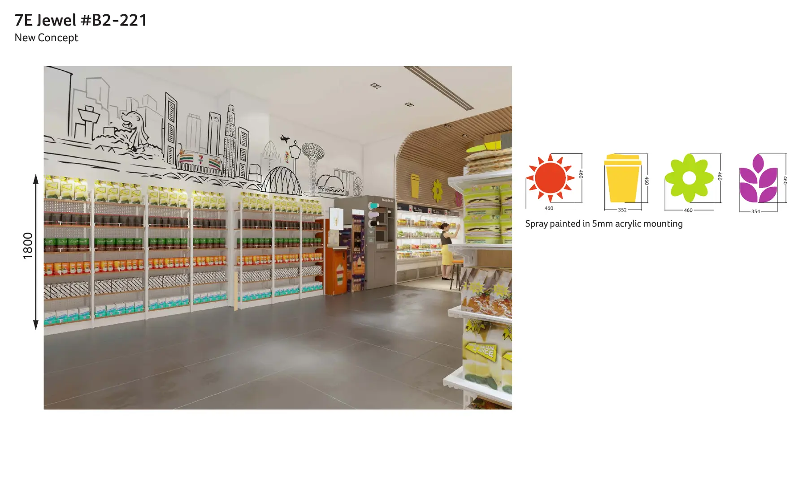
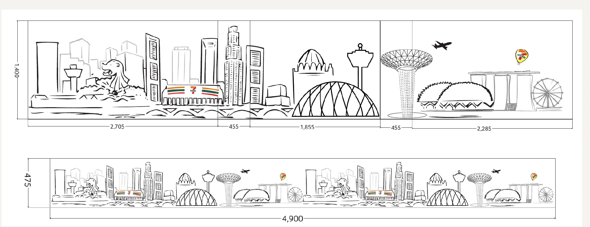
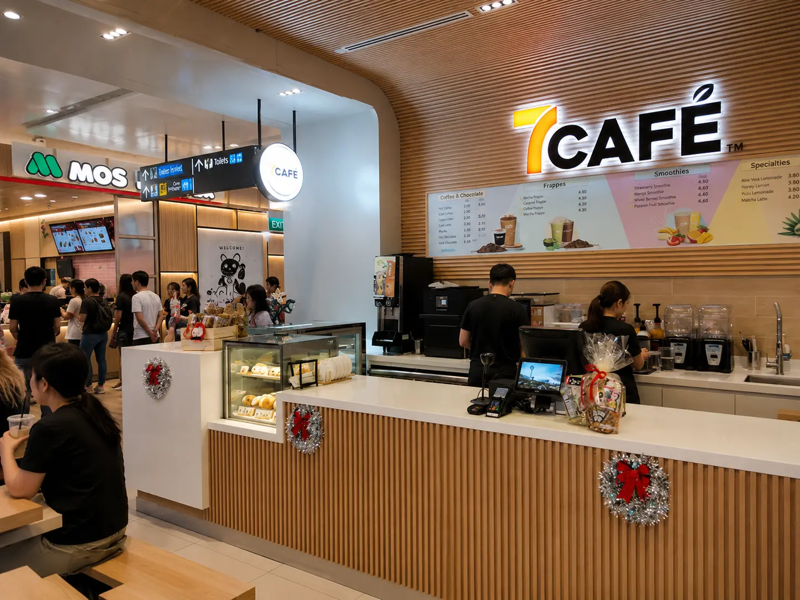

7-ELEVEN · 7CAFÉ · JEWEL CHANGI
7Café
Concept Store
Translating an established 7Café concept into a production-ready retail environment at Jewel Changi Airport.

THE ASSIGNMENT
Translate the approved 7Café concept into an executable Jewel Changi store. The work focused on material selection, production detailing, mounting coordination and practical adjustments needed to achieve approval and installation.
SHOPFRONT IDENTITY
Built to install, not just to visualize.


MY CONTRIBUTION
I developed the selected concept through signage engineering, graphics, material specifications and fabrication-ready mounting details. Where site constraints required change, I revised and re-proposed the design for approval.
IN-STORE LANGUAGE
A consistent customer journey from façade to counter.



DELIVERED RESULT
The completed store brings together the shopfront, café service counter, material palette and graphic language. Ribbed timber cladding, crisp white counters, tiled work surfaces and integrated lighting carry the concept into a practical, ready-to-use environment.
